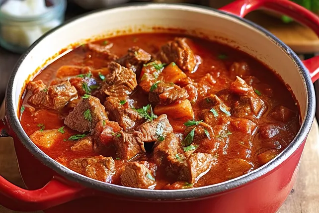

Dies ist ein Grundrezept für Gulasch, man kann es wunderbar abwandeln, indem man z. B. eine halbe Stunde vor Ende der Garzeit noch Sahne, Kartoffeln und/oder Paprikaschoten zugibt. Ich gebe auch immer noch Knoblauch dazu, den mochte aber meine Oma nicht.
Dazu schmecken Knödel jeglicher Art, Kartoffeln oder Nudeln.